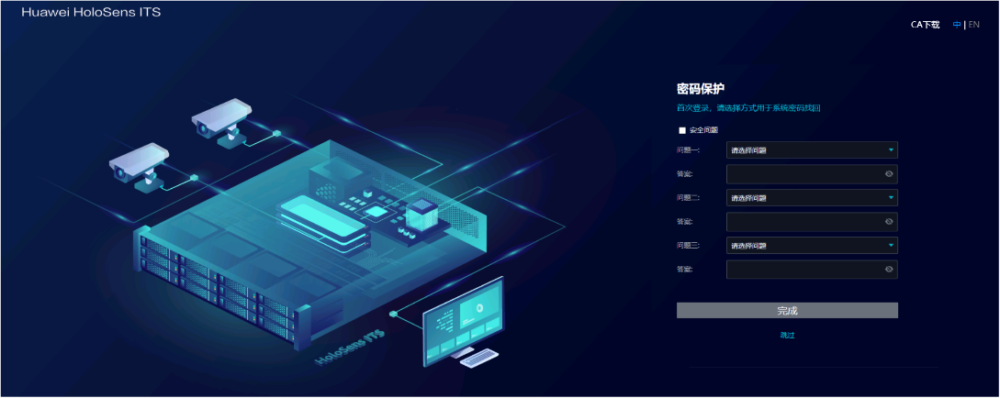

登录OMU Portal
应用限制
- 浏览器：Chrome 7.0.276及以上版本。
- 操作系统：32/64位Windows 7、32/64位Windows 10。
操作步骤
- 检查用于登录OMU Portal的PC机与ITS800网络连接是否正常。
- 如果设备已经修改过网络参数，需确保用于登录OMU Portal的PC机与ITS800网络连接正常。
- 如果设备是刚出厂或者刚执行过恢复出厂设置，需确保用于登录OMU Portal的PC机与ITS800直连，且和ITS800在同一个网段（192.168.3.111/24）才能连到OMU Portal。其中，刚出厂或者刚执行过恢复出厂设置的设备，其网络相关信息如下：
- IP地址：192.168.3.111
- 子网掩码：255.255.255.0
- 网关地址：192.168.0.1
- 打开Chrome浏览器，设置浏览器参数。
- 打开浏览器，在地址栏输入“chrome://flags/”，按下回车键。
- 在搜索框输入“TLS”，查看TLS1.2或TLS1.3协议是否启用，若未启用，则需要设置为启用状态。
- 关闭代理服务器。
- 按下“Alt”和“F”组合键或者点击浏览器右上角的，选择。
- 关闭“手动设置代理”中“使用代理服务器”开关按钮。
- 在浏览器地址栏中输入“https://IP地址:8443”，按“Enter”键。
其中，IP地址表示ITS800设备的IP地址。
- 首次登录需要设置业务系统和操作系统帐号密码，如图1所示。
- 勾选“密码应用到所有账号”。
密码一次性应用到业务admin用户、操作系统admin用户和操作系统root用户。
- 未勾选“密码应用到所有账号”。
此处以介绍如何设置业务系统admin用户密码为例。
操作系统admin用户和root用户密码请单击“下一步”依次配置。
- 自定义设置用户密码，出于安全考虑，建议使用复杂度高的密码，密码复杂度建议请参考密码维护建议。
业务系统admin用户、操作系统admin用户及root用户的参数解释如表1所示。表1 参数解释 参数名称
应用场景
应用说明
业务系统
用户名：admin
- 该admin用户是业务系统用户，可用于登录OMU Portal和iClient ME客户端等。
admin用户为系统预定义用户，拥有系统所有权限。该用户的权限和名称均无法修改。
密码/确认密码
操作系统
用户名：admin
admin用户是操作系统用户，可用于远程和本地登录操作系统，并对一部分文件、目录或进程进行操作。
以admin用户首次登录操作系统，需要修改登录密码。
如何修改登录密码请参见如何通过网口登录操作系统。
密码/确认密码
用户名：root
root用户是操作系统最高权限用户，可对任何文件、目录或进程进行操作。
登录操作系统时，需要先以admin用户登录，然后才能切换到root用户；不能直接以root用户登录。
密码/确认密码
- 勾选“密码应用到所有账号”。
- 使用设置好的业务系统密码，重新登录OMU Portal。
- 首次登录OMU Portal，请设置密码保护方式，如图2所示。图2 首次登录设置密码保护
- 点击“跳过”按钮，跳过当前设置密码保护设置页面，后续设置请参考如何修改安全问题。
- 选择密码保护方式并设置。
- 勾选“安全问题”复选框，设置安全问题与答案。

- 可以选择已有问题，或自定义问题。自定义问题长度1~80个字节，不能包含如下特殊字符：~`!^={}|\[]<>'
- 自定义问题答案，去除首位空格后长度不少于2个字节，不超过128个字节。
- 需要设置三个安全问题与答案，所有安全问题、问题答案、安全问题与答案均不能相同，且修改完成后，需要进行admin账号认证才能生效。
点击“完成”按钮，并跳转到主界面。
- 勾选“安全问题”复选框，设置安全问题与答案。
- 首次登录OMU Portal，请确认网络安全设置信息，具体内容查看表2。
表2 网络安全设置模式说明 安全模式
模式说明
备注
高级模式
支持用户按需手动启用算法或协议。
- MD5算法存在一定的网络安全风险，系统默认不启用。如果对接的设备仅支持MD5算法，那么不启用MD5算法会导致对接失败，请根据您的需求谨慎选择。
- Basic认证存在安全风险，系统默认不启用。若摄像机的RTSP协议只支持Basic认证，则本设备需要开启Basic认证，才能使用RTSP协议进行媒体流传输，请根据您的需求谨慎选择。
- 使用HTTP存在网络安全风险，系统默认不启用。但是因为支持HTTPS协议上传抓拍图片的摄像机较少，选择HTTPS可能会导致抓拍功能不可用，请谨慎选择。
- 对接的设备是否仅支持MD5算法和Basic鉴权认证、是否支持HTTPS协议，请和设备提供商确认。
安全模式
不启用MD5、Basic等不安全的算法和协议，可能影响摄像机及其他平台对接的兼容性。
兼容模式
启用MD5、Basic等不安全的算法或协议，存在网络安全风险。